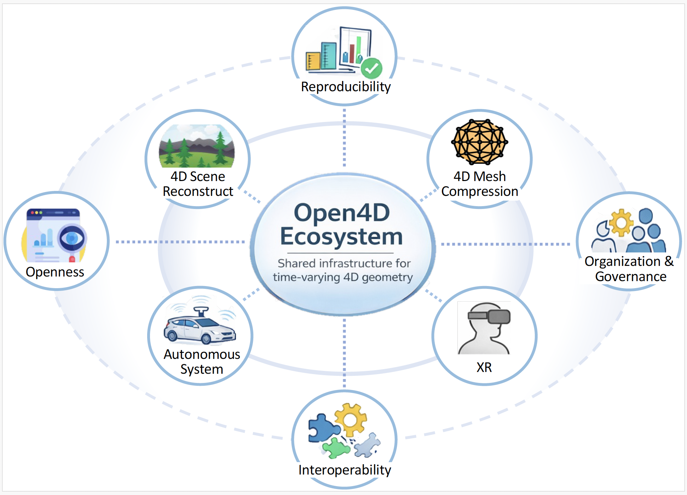

Open4D is an open, research-driven platform for the representation, compression, processing, evaluation, and streaming of time-varying 4D geometry — built for XR, robotics, teleoperation, digital twins, and autonomous systems.
# Install Open4D (development) $ git clone https://github.com/SINRG-Lab/Open4D.git $ cd Open4D $ pip install -e . # Play a time-varying mesh sequence $ python examples/play_mesh_o4d.py
A new home for docs, modules, benchmarks, and the project roadmap.
Neural time-varying mesh compression and 4D scene mesh compression now ship as submodules.
Real-time 4D mesh decoding on standalone XR headsets via the Unity plugin.
Canonical 4D data models, IO readers/writers, and quality metrics — installable with pip.
Today, 4D geometry pipelines are fragmented — algorithms live in paper-specific codebases, evaluation scripts are ad hoc, datasets and metrics are inconsistent, and systems integration is repeatedly re-implemented. Open4D provides a common substrate:

From canonical data structures to on-headset playback, Open4D covers the full lifecycle of time-varying geometry.
Canonical representations for time-varying meshes and point clouds — the .o4d data model treats time as a first-class dimension.
Unified readers and writers for mesh sequences, point-cloud streams, and Draco-compressed point clouds — one API across formats.
State-of-the-art encoders and decoders for 4D meshes — neural (N4MC), scene-level (TSMC), and time-varying mesh compression (TVMC).
A Unity decoder plugin decodes and renders 4D meshes in real time on XR headsets, including the standalone Meta Quest 3.
Systems-aware evaluation out of the box: geometric distortion, bitrate, latency, and temporal-stability metrics for streaming pipelines.
Paper-reproducible experiment code with reimplemented baselines, configs, and scripts — so results are comparable across papers.
Independent modules on top of the stable core API. Each ships with code, configs, and evaluation scripts.
Neural time-varying mesh compression — learned codecs for dynamic mesh sequences.
Learn more →Time-varying mesh compression exploiting temporal redundancy across frames.
Learn more →Real-time 4D mesh decoding in Unity — runs on XR headsets like Meta Quest 3.
Learn more →Deformation-aware temporal alignment using as-rigid-as-possible volume tracking.
Learn more →Structured editing of dynamic geometry that stays consistent across time.
Learn more →Open4D installs as a standard Python package. Bundled examples let you load, convert, and play time-varying meshes and point clouds immediately — including Draco-compressed point-cloud streams.
Read the docs# clone and install
git clone https://github.com/SINRG-Lab/Open4D.git
cd Open4D
pip install -e .
# play a 4D mesh sequence
python examples/play_mesh_o4d.py
# play a Draco-compressed point cloud
python examples/play_draco_pointcloud_o4d.pyIf Open4D is useful in your work, please cite the project.
@software{open4d2026,
title = {Open4D: An Open Platform for Time-Varying 4D Geometry Data},
author = {Spatial Intelligence Research Group},
year = {2026},
url = {https://github.com/SINRG-Lab/Open4D}
}New modules, benchmarks, datasets, metrics, and documentation are all welcome. Open4D is an open research platform — contributions compound.